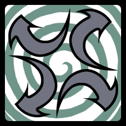
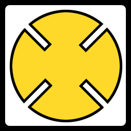
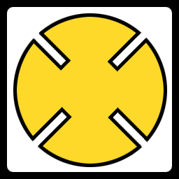

17 |
Tribal Emblems |
 |
Es gibt zwei verschiedene Arten von Karten:
Symbolkarten
Dies sind einige der verschiedenen Formen, die du auf den Karten finden wirst achte auf die feinen Unterschiede!
Pfeilkarten Es gibt drei Arten von Pfeilkarten. Es sind Spezialkarten, die keine normalen Duelle hervorrufen, sondern die Spielregeln verändern.
All Flip-Karte Wenn eine ALL FLIP-Karte auftaucht, beginnt ein Countdown. Am Ende des Countdowns drehen alle Spieler automatisch eine Karte um. Wenn dies passiert, halte Ausschau nach Duellen.

Fast Grab-Karte Wenn die FAST GRAB-Karte aufgedeckt wird, hat jeder Spieler die Möglichkeit, das Totem zu berühren. Der Spieler, der das Totem zuerst berührt, kann all seine aufgedeckten Karten in den Topf legen.
Color Match-Karte Bei Spielen mit 4 oder mehr Spielern: Wenn ein Spieler eine COLOR MATCH-Karte aufdeckt, müssen die Spieler mit denselben Farben unabhängig von ihrem Kartensymbol versuchen, das Totem zu berühren. Der Spieler, der die COLOR MATCH-Karte aufgedeckt hat, setzt in dieser Runde aus.
Bei Spielen mit 3 Spielern kommen die Color Match-Karten nicht vor. Stattdessen tritt die FAST GRAB-Regel in Kraft, wenn alle aufgedeckten Karten die gleiche Farbe aufweisen.
Color-Matching gilt solange, bis ein Spieler das Totem berührt oder umwirft oder eine andere Pfeilkarte aufgedeckt wird.
|
 



 |
 |
 |